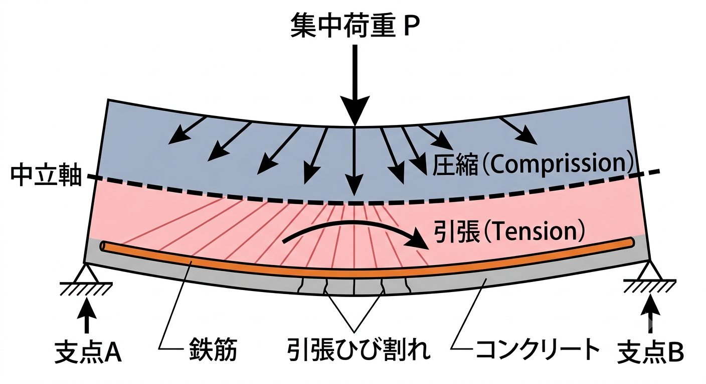
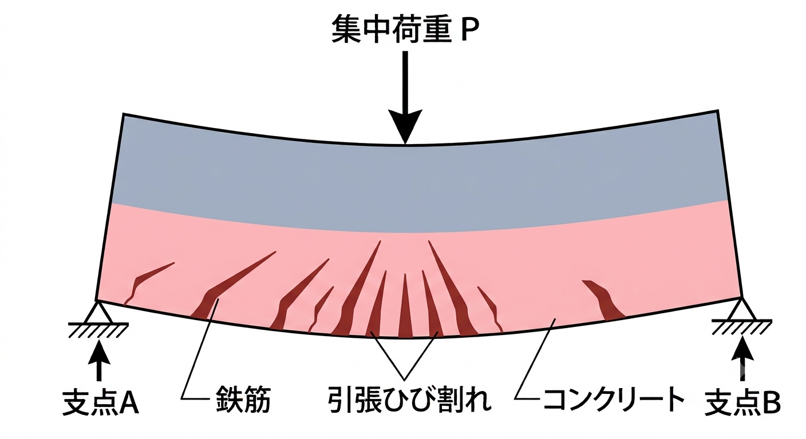

鉄筋コンクリート造（RC造）とは？鉄筋とコンクリートの役割分担を解説
鉄筋コンクリート造（RC造、Reinforced Concrete）は、鉄筋とコンクリートを組み合わせた構造です。マンション・学校・庁舎など中低層建築の定番で、剛性・遮音性・耐火性・耐久性に優れます。この記事では「なぜ鉄筋を入れるのか」という原理から、長所・短所、構造形式、耐久性のポイントまで、構造設計の視点で体系的にまとめます。
鉄筋とコンクリートの役割分担
RC造が合理的なのは、2つの材料が弱点を補い合うからです。
| 材料 | 得意 | 苦手 | 担当する力 |
|---|---|---|---|
| コンクリート | 圧縮に強い | 引張に弱い（すぐひび割れる） | 圧縮力 |
| 鉄筋 | 引張に強い | 圧縮では座屈・錆びる | 引張力 |
梁の曲げでは、引張側に鉄筋を配置してコンクリートのひび割れを補います。さらに2つの材料は熱膨張率がほぼ同じで、アルカリ性のコンクリートが鉄筋の錆を防ぐという相性の良さもあります。
RC造の原理（なぜ鉄筋を入れるのか）
コンクリートは圧縮に強い一方で、引張力やせん断には弱い材料です。硬いけれども脆く、引っ張られるとすぐにひび割れてしまいます。そこで、引張・圧縮・せん断のいずれにも強く、粘り強い（靭性のある）鉄筋をコンクリートの中に埋め込み、互いの弱点を補い合うようにしたのがRC造です。鉄筋は単体では細く座屈しやすいものの、コンクリートに包まれることで座屈が拘束され、本来の引張強度を存分に発揮できます。
① 曲げ：引張側に主筋を配置する
図1のように、単純梁に荷重が加わると、中立軸を境にして上側に圧縮力、下側に引張力が生じます。コンクリートは引張に弱いため、放置すると下側（引張側）にひび割れが発生します。これを防ぐため、引張力が生じる下側に鉄筋（主筋）を配筋し、コンクリートに代わって引張力を負担させます。

② せん断：あばら筋（スターラップ）で斜めひび割れを抑える
さらに図2のように、上側に生じる圧縮力と下側の引張力、そこに上向き・下向きのせん断力が加わると、その合成応力は斜め方向に働きます。そのままではハの字型（斜め）の亀裂が生じてしまうため、これを補強するのがあばら筋（スターラップ）です。

あばら筋は、斜めひび割れの向きを考えると逆ハの字型に配置するのが理想です。しかし鉄筋の組み立てが煩雑になるため、実務では普通は縦（鉛直）に入れるのが一般的です。また、主筋を途中で斜めに折り曲げたベンド筋（曲げ上げ筋）も、有効なせん断抵抗の要素となります。
- コンクリート＝圧縮担当、鉄筋＝引張・せん断担当。役割を分けて弱点を補い合う。
- 曲げには主筋（引張側）、せん断にはあばら筋とベンド筋で対応する。
RC造の長所（メリット）
RC造が中低層建築の定番として広く採用される理由は、次の5点に整理できます。
- 耐震構造であること
鉄筋・コンクリートともに材料としての強度が高く、両者を一体化することで地震に対して高い剛性と耐力を確保できます。剛性が高い（変形しにくい）ため大地震時の揺れを抑えやすく、適切に設計・施工されたRC造は優れた耐震性能を発揮します。 - 耐火構造であること
コンクリートは不燃材料で熱を伝えにくく、内部の鉄筋を火災の熱から守ります。火災に強く延焼しにくいため、法的にも耐火建築物として扱いやすく、避難・財産保全の面でも有利です。 - 耐久構造であること
アルカリ性のコンクリートが鉄筋の錆を防ぎ、適切なかぶり厚さを確保すれば長期間にわたり性能を保ちます。木造に比べて腐朽・シロアリの心配が少なく、遮音性にも優れるため、長寿命の建物をつくりやすいのが特長です。 - 建物規模・形状（デザイン）を自由に設計できる
コンクリートは型枠に流し込んで成形するため、曲面や開口、複雑な断面など自由度の高い形状に対応できます。低層から中高層まで幅広い規模・用途に適用でき、意匠の自由度が高いことも魅力です。 - 維持管理が容易であること
適切に施工されたRC造は経年劣化が比較的緩やかで、定期的な点検と補修で長く使えます。鉄骨造のように防錆塗装を頻繁に塗り替える必要が少なく、ライフサイクルコストを抑えやすい構造です。
RC造の短所（デメリット）
一方で、RC造には次のような弱点もあり、設計・計画の段階で配慮が必要です。
- 重量が大きいこと
コンクリートは比重が大きく、建物自体が重くなります。地震力は建物重量に比例するため自重が大きいほど地震力も大きくなり、基礎や地盤への負担も増えます。軟弱地盤では杭基礎や地盤改良が必要になることもあります。 - 施工が容易ではなく、施工状態によって強度が左右されること
配筋・型枠・コンクリート打設・養生など多くの工程があり、現場での品質管理が建物の強度を大きく左右します。打設不良（ジャンカ）やかぶり不足、養生不足があると所定の性能を発揮できず、工期も長くなりがちです。 - 取り壊し（解体）が困難であること
頑丈なゆえに解体に手間とコストがかかり、騒音・振動・粉じんなどの問題も生じます。コンクリートがらの処分量も多く、建て替え時の負担が大きい点はデメリットです。 - 靭性に乏しいこと
鉄骨造に比べて粘り（変形して耐える能力）が小さく、脆性的に破壊しやすい傾向があります。これを補うため、帯筋・あばら筋による拘束や適切な配筋によって靭性を確保する設計が重要になります。 - 柱径（部材断面）が大きくなること
必要な耐力を確保するために柱・梁の断面が大きくなりがちで、室内に柱型・梁型が出て有効面積や開放感が損なわれることがあります。大スパン（広い無柱空間）も苦手で、この点は鉄骨造に分があります。
主な構造形式
耐久性の重要キーワード
| 用語 | 内容 |
|---|---|
| かぶり厚さ | 鉄筋を覆うコンクリートの厚さ。錆・耐火・付着のために最低値が決められている。 |
| 付着 | 鉄筋とコンクリートが一体で働くための密着。異形鉄筋の凹凸が付着を高める。 |
| 中性化 | コンクリートが空気中のCO₂で徐々にアルカリ性を失う現象。進むと鉄筋が錆びやすくなる。かぶり厚さで進行を遅らせる。 |
| 設計基準強度 Fc | 設計で前提とするコンクリート強度。高いほどヤング係数も大きい。 |
- RC造は重い＝地震力が大きい（地震力は重量に比例）。その分を高い剛性と耐力で受け止める設計思想。
- 耐久性は「かぶり厚さ」がほぼすべての鍵。錆・耐火・中性化対策が一手で効く。
構造種別の比較は「RC造・S造・SRC造・木造の違い」、耐力壁は「耐力壁とは？」、鉄骨造は「鉄骨造（S造）とは？」をどうぞ。
まとめ
- RC造はコンクリートが圧縮、鉄筋が引張を担う合理的な複合構造。
- 剛性・遮音・耐火・耐久に優れるが、重く大スパンが苦手で工期が長い。
- 形式はラーメンと壁式。耐久性は「かぶり厚さ」と中性化対策が鍵。